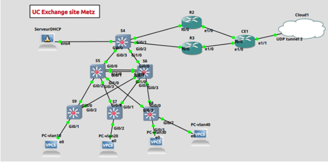
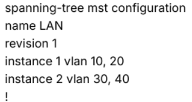
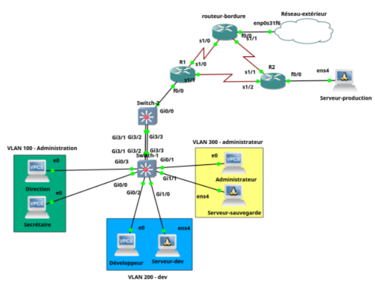
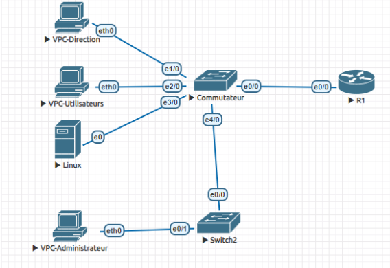
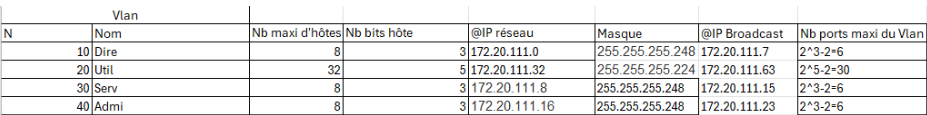

SAE 3.03 : Concevoir un réseau informatique sécurisé multi-sites
Dans le cadre de cette SAE, l’objectif était de concevoir et configurer une infrastructure
réseau complète pour deux entreprises fictives, UC Exchange et
ABC Conseil, ayant des sites à Strasbourg, Metz et Nancy.
Le réseau devait être fiable, évolutif, et permettre la communication entre les différents
sites tout en assurant la sécurité et la haute disponibilité.
Le projet était divisé en trois grandes parties :
L’administration des réseaux locaux (LAN)
La mise en œuvre des services réseau (DNS, Web, Mail, AD)
L’interconnexion des sites via un réseau opérateur
J’ai travaillé en équipe avec deux autres étudiants. Pour ma part, j’étais en charge
de la partie LAN, ce qui m’a permis de gérer l’intégralité de
l’architecture réseau locale de chaque site.
Conception de l’architecture LAN
J’ai choisi une architecture en Two-Tier Layer, plus adaptée à la taille
des entreprises. Ce modèle repose sur une hiérarchie simple entre la couche d’accès
(pour les utilisateurs) et la couche de distribution.
Une meilleure gestion du trafic
Une maintenance simplifiée
Une bonne évolutivité si l’entreprise s’agrandit

Architecture LAN – UC Exchange
Segmentation du réseau
J’ai créé 4 VLANs par site, correspondant à chaque service :
VLAN 10 : Service informatique
VLAN 20 : Direction
VLAN 30 : Service financier
VLAN 40 : Salle des serveurs
Chaque VLAN a reçu un sous-réseau IP distinct, calculé à partir de la plage globale
fournie. J’ai choisi une découpe en /29 ou /28 selon le nombre d’hôtes requis,
afin d’optimiser l’espace d’adressage.
Routage inter-VLAN et MSTP
Le routage inter-VLAN a été mis en place via un switch de niveau 3.
Chaque VLAN dispose de sa passerelle, assurant la communication entre services.
Pour éviter les boucles réseau dues aux liens redondants, j’ai configuré le
protocole MSTP :
Définition d’un domaine MST commun
Répartition des VLANs sur deux instances
Attribution des rôles Root Bridge primaire et secondaire

Configuration MSTP
Haute disponibilité avec VRRP
Le protocole VRRP a été déployé sur les routeurs R2 et R3 afin
d’assurer la continuité de service. Des tests de coupure ont confirmé
le basculement automatique.
Un serveur DHCP a été installé sous Linux (ligne de commande uniquement) dans le VLAN serveur. Il attribue automatiquement les adresses IP aux machines des VLANs grâce à l’utilisation de l’IP helper-address sur les interfaces VLAN du switch.
Pour permettre aux machines d’accéder à l’extérieur, j’ai configuré un PAT (Port Address Translation) sur le routeur CE1. Cela permet à toutes les machines privées de sortir sur Internet via une seule adresse publique, en différenciant les connexions avec les ports.
Pour l’accès Internet, un PAT a été configuré sur le routeur CE1,
permettant aux machines privées de sortir via une adresse publique unique.
SAE 21 : Construire un réseau informatique pour une petite structure
Grâce à cette SAE, j'ai acquis la capacité de construire un réseau local
avec des commutateurs et des routeurs, ainsi que de mettre en place des
règles de sécurité simples, en utilisant le logiciel GNS3.
J'ai segmenté le réseau local en créant trois VLAN pour différents groupes
d’utilisateurs :
VLAN 100 : Administration
VLAN 200 : Développeurs
VLAN 300 : Administrateurs
J’ai également réalisé une segmentation en sous-réseaux spécifiques pour
différents usages : administration, utilisateur, administrateur,
production et interconnexion.

Topologie réseau – segmentation VLAN et interconnexion
Gestion des VLAN et routage
Pour la gestion des VLAN, j'ai configuré le routage inter-VLAN sur le
commutateur Switch-2, avec un équilibrage de charge entre
Switch-1 et Switch-2 via le protocole Spanning Tree.
Le protocole DHCP a été activé sur Switch-2 afin de
configurer automatiquement les postes clients des VLAN.
Les interconnexions des équipements de niveau 3 ont été réalisées en
utilisant le protocole RIP v2, avec des adresses de
liaison en /30.
Mise en place des services
J’ai déployé un service FTP sur le serveur de sauvegarde,
avec un accès anonyme et des permissions spécifiques pour deux utilisateurs
nommés Antoine et Élise.
J’ai également installé le service Apache sur les serveurs
de développement et de production. Les pages web ont été synchronisées via
rsync afin de garantir la cohérence des contenus entre les
environnements.
Sécurisation du réseau
Pour renforcer la sécurité des commutateurs, j’ai mis en place la
sécurité des ports, autorisant uniquement la première
machine connectée sur chaque port.
Des ACL ont été configurées sur le routeur R2 afin de
limiter le trafic aux ports HTTP (80),
SSH (22) et rsync (873).
Sur le routeur de bordure, j’ai configuré des ACL autorisant uniquement
le trafic ICMP et HTTP provenant de
l’extérieur, avec une surcharge NAT appliquée au
VLAN administration.
SAE 12 – S’initier aux réseaux informatiques
Dans le cadre de mon parcours de formation, j'ai eu l'opportunité de travailler
sur le module SAE 1.02 qui m'a permis de développer des compétences
en réseaux informatiques. Ce module avait pour objectif de me familiariser avec
la configuration et la gestion des équipements réseau, ainsi que la mise en place
et le test de services réseau de base.
Prise en main de l’environnement EVE-NG
Pour commencer, j'ai pris en main l'environnement de simulation EVE-NG,
qui m'a permis de configurer et de tester virtuellement les équipements réseau.
Cet outil est essentiel pour simuler un réseau complet sans avoir besoin
d'équipements physiques.

Simulation réseau réalisée sous EVE-NG
J'ai configuré les commutateurs Cisco 2960 et les routeurs de la
série 2800. La configuration incluait l'interconnexion des
équipements dans EVE-NG et la mise en place des bases du réseau.
J'ai défini l’adressage IP et segmenté le réseau en plusieurs VLANs :
VLAN Direction, Utilisateurs,
Serveurs et Administrateur.
Chaque VLAN disposait d’un sous-réseau dédié afin d’optimiser la gestion
et la sécurité du réseau.

Table d’adressage IP et segmentation VLAN
J'ai configuré un serveur DHCP pour distribuer des adresses IP
dynamiques. Ce service était crucial pour assurer que tous les appareils du réseau
recevaient automatiquement une configuration IP valide.